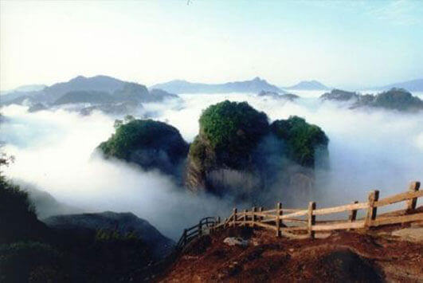
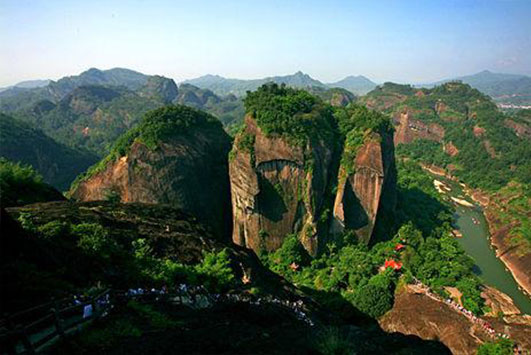
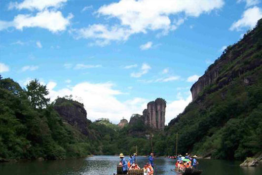
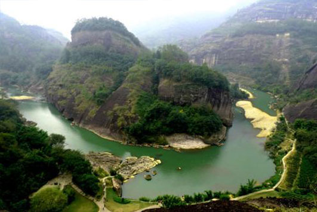
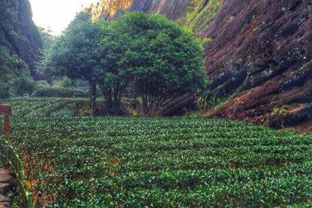
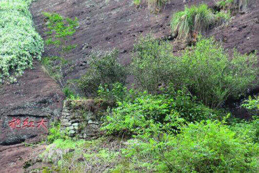
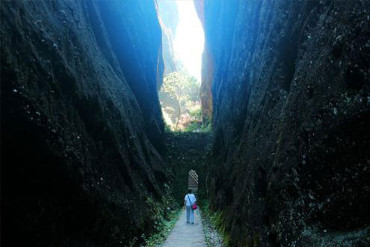
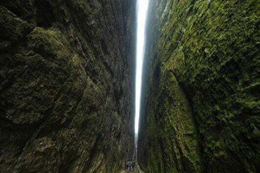

morly旅游网
武夷山位于江西与福建西北部两省交界处，是中国著名的风景旅游区和避暑胜地。属典型的丹霞地貌，是首批国家级重点风景名胜区之一。武夷山是三教名山。自秦汉以来，武夷山就是羽流禅家栖息之地，因此留下了不少宫观、道院和庵堂故址。武夷山还曾是儒家学者倡道讲学之地。武夷山还是世界文化与自然双重遗产、世界生物圈保护区、全国重点文物保护单位（武夷山崖墓群）、国家重点风景名胜区、国家AAAAA级旅游景区、国家级自然保护区、国家水利风景区、国家生态旅游示范区、全国文明风景旅游区示范点。
武夷山风景十分秀丽，是自然给予我们的礼物。武夷山有许多各有特色的自然风光，有天游峰、九曲溪、大红袍景区、一线天、水帘洞等。天游峰位于六曲溪北，景区中心。东接仙游岩，西连仙掌峰，壁立万仞，高耸群峰之上。每当雨后乍晴，晨曦初露之时，白茫茫的烟云，弥山漫谷，风吹云荡，起伏不定，犹如大海的波涛，汹涌澎湃。登峰巅，望云海，变幻莫测，宛如置身于蓬莱仙境，遨游于天宫琼阁，故名天游。为武夷第一胜景。九曲溪位于福建省武夷山峰岩幽谷之中。因武夷山有三十六峰，九十九岩。峰岩交错，溪流纵横，九曲溪贯穿其中，蜿蜒十五华里。又因它有三弯九曲之胜，故名为九曲溪。由于九曲溪弯弯曲曲，深深地切割着武夷群峰，形成九曲清流绕青峰的美妙景观，乘坐竹筏泛溪观赏山景，成为武夷山游览的一大特色。去九曲溪游玩，你可以顺着水流而下，观赏沿途景色。 武夷岩茶非常有名，到元代时，这里已经设有御茶园，专门督造贡茶。大红袍是武夷岩茶中的状元，它生长在武夷山北部的九龙窠中，仅剩四株，极为名贵。九龙窠是一条清泉渗流的峡谷，大红袍生长的地方海拔600多米，溪涧飞流，云雾缭绕。岩缝中渗出的泉水滋养着它们，因而不用施肥它们也生长茂盛。爱茶之人可以去大红袍那里看看，大红袍产量极少，只有几两，要是能有幸品尝一下，也是人生一件幸事。一线天位于武夷群峰的西南端，是武夷的最奇的岩洞，素有“鬼斧神工之奇”的称号。灵岩的岩顶裂开一罅，就像是利斧劈开一样，相去不满一尺，长约一百多米，从中漏进天光一线，宛如跨空碧虹，这就是令人叹为观止的一线天。武夷山自然风光秀丽，希望大家能去看一看。
武夷山还有一些文化遗产，有古闽族文化、古汉城遗址、道教洞天、武夷宫等，这些都极富有历史文化气息，喜欢这种有时光沉淀的景观的小伙伴也可以去看一看哦。
门票价格
从2018年10月1日起，武夷山景区改变以往一、二、三日游门票价格为一种门票价格，并实行淡旺季价格，即旺季（3月至11月）门票价格从160元降为140元，淡季（12月至次年2月）门票价格从160元降为120元（3日内有效）。
天游峰
天游峰，峰上有一涧沿崖壁流下峰底，形成高差约120m泉。峰上名木古树众多，常绿阔叶林郁郁葱葱。明代著名地理学家徐霞客赞道：“不临溪而能尽九溪之胜，此峰固应第一也。”
 九曲溪
古人游九曲溪，是从武夷宫按曲序逆流而上。武夷宫前，晴川一带为一曲，从此逆流而上直至齐云峰下的星村镇，是为九曲。沿途无处不成景。
 大红袍景区
大红袍景区位于武夷山风景区的中心部位，景区著名大峡谷“九龙窠”内。举世闻名的大红袍生长在九龙窠谷底靠北面的悬崖峭壁上。这里叠着一大一小两方盆景式的古茶园，六株古朴苍郁的茶树，枝繁叶茂。
 一线天
一线天，又名灵岩，位于武夷群峰的西南端，是武夷的最奇的岩洞，素有“鬼斧神工之奇”的称号。
 内容整理至网络，如有侵权，请联系我们！1255394075@qq.com